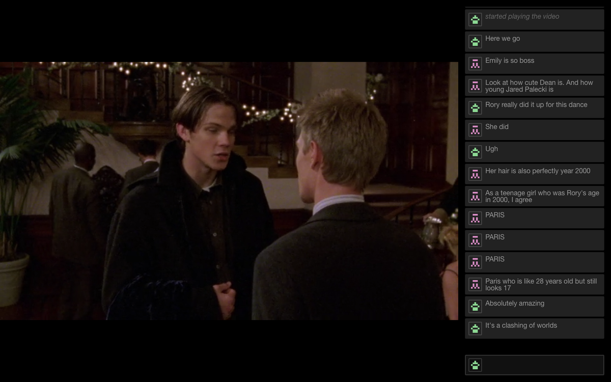
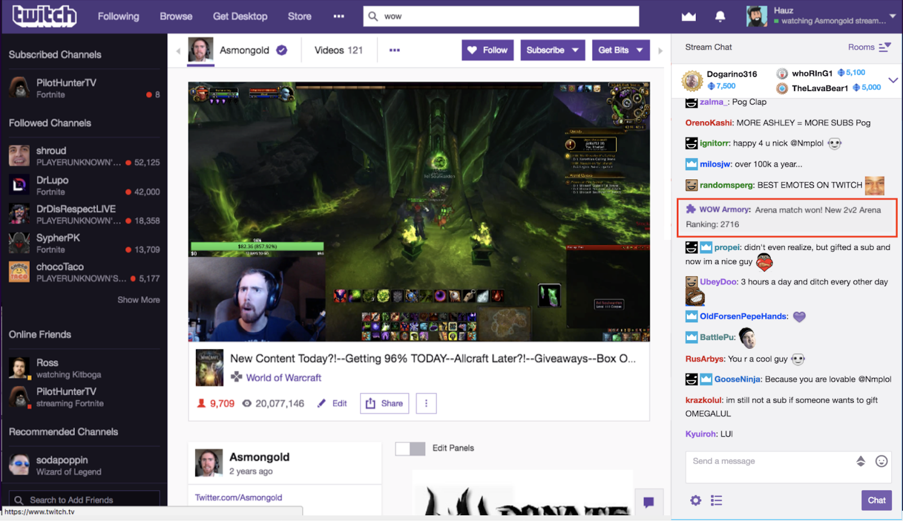
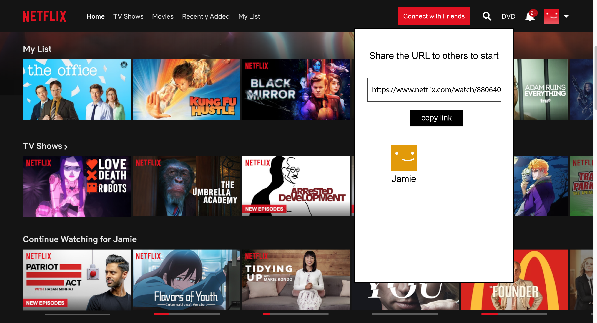

Course Project · ENTR 390.12
UX Design · Product Design · Product Management
Adobe Illustrator · inVision · Sketch
Product Developement · Usability Testing · Iteration
Netflix is a streaming service that takes shows and movies and lets subscribers watch them anytime, anywhere. When a show or movie is released onto Netflix, subscribers are able to stream and watch them all at once - a phenomenon called “bingeing”. However, the way this product is structured makes Netflix a fairly solitary product; there is no real way to connect with other users and increase social interaction because the shows and movies are meant to be streamed on your own time, rather than with groups of people (like network TV).
There is no easy way for a Netflix user to extensively engage with other users while streaming a show or movie.
Netflix Showtime can take advantage of the blooming streaming industry and the inherent gap streaming creates. People enjoy seeing that other people are saying when a show airs (see: Twitter and the Game of Thrones premiere), but streaming does not allow this tradition. Netflix Showtime intends to patch this gap in streaming by creating a space where people can gather together to live chat about the show/movie they watch.
The market for this product consists primarily of Netflix users who 1) are part of a movie/show’s fanbase like Pulp Fiction or Stranger Things, and looking for a communal space to watch shows with other fans, and 2) Friends or significant others in a long distance relationship looking to reconnect through something low-key but highly engaging.
Name: Jackson Jones
Age: 27
Location: Toledo, OH
Favorite Netflix shows: Stranger Things, Black Mirror, The Office, Parks and Rec, Daredevil
Bio: Jackson is a sociology/psych PhD student who enjoys spending his free time online playing games and bingeing his favorite shows. He’s an avid user of social media platforms like Tumblr, Reddit, and Twitter, and primarily uses these platforms to talk to fans of the shows he enjoys watching. However, now that more and more of his favorite shows are entering the Netflix domain, he feels a pressure to finish an entire season before interacting with anyone online.
Goals/Motivation
Name: Kamala Harrison
Age: 18
Location: Ithaca, NY
Favorite Netflix shows: GLOW, Queer Eye, Orange is the New Black, You
Bio: Kamala loves watching Netflix with her friend group back home in Michigan. Whenever her friend group gets together, they always find a fun show or movie to watch together. Since moving away for college, Kamala’s been struggling to find a foothold in her new life, and wishes for some form of stability. She misses her friends, and wants a way to connect with them while they’re living their different lives.
Goals/Motivation
Name: Yin Guo
Age: 23
Location: Singapore
Favorite Netflix shows: Breaking Bad, Mindhunter, You, Master of None
Bio: Yin was an international student studying at Columbia, but she recently moved back to Singapore shortly after graduation to work at a company there. She loves her new job and is excited for the opportunities it will bring her, but she also misses her American partner, who’s finishing up their final year in school. The long distance, coupled by the half-day time difference, makes it extremely difficult to talk to them, let alone find things to do with them. She can feel the relationship starting to strain because of this, and she wants to find a way to fix it.
Goals/Motivation
I did an assortment of competitive analyses to determine the best layout for this Chrome extension. Right now, the only competitor really is Netflix Party, which only does private chats for friends and syncs of the play/pause buttons, but little else.
Another product I looked at was Twitch. Twitch mirrors a lot of what my product will have; a live chat, an active stream, and, the ability to hop into the middle of a stream.
After looking at other products for inspiration, I knew what I needed: a chatbox that anyone, anonymous or not, can enter, preset showtimes that will start on the half hour, and the ability to start and join and private screening with friends and/or significant others.
I wanted the product to be as personable and friendly as possible. This means making the chat seem familiar, and making the aesthetics of the extension look similar to Netflix's aesthetics.
The first thing I did was make the showtime options. I wanted them to start every half an hour, so people have time to set settled, and yet not have to wait so long that they get bored and decide to leave.

Then, I let everyone choose their own handle/username. This makes it a lot easier to identify certain people, which makes the entire chat feel more real and more like the users are talking to actual people.

From here, the chatroom is pretty intuitive to use; you can hide the chat whenever you want, you can pin certain users to see their funny remarks, and other users can ping you using the "@" symbol.
As for the private showtimes feature, I followed Netflix Party's example of providing a link for other friends to click on in order to join. While not the most efficient way, it is the easiest for this first iteration.
After everyone is onboarded, the private screening can start and everyone has the option of turning on their audio and video for better communication.

There were a few usabilities issues that I cleaned up after a few usability tests. The main ones were: